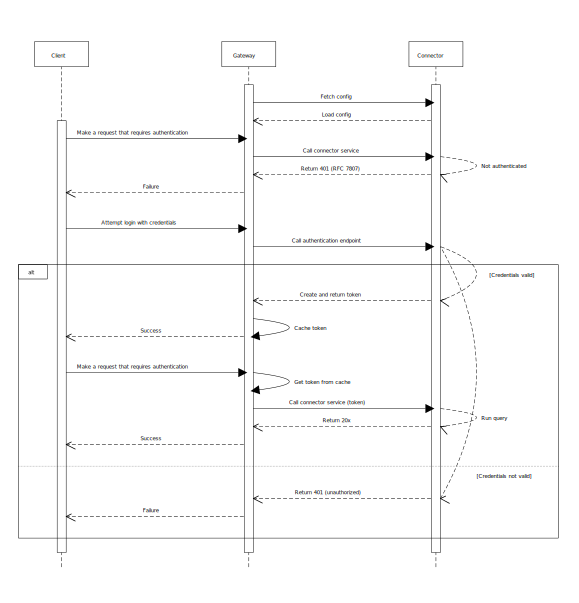

Supporting authentication
Many of the data sources that users might want to query through a connector require authentication. For example, some sources require a username-password combination, while others need the caller to provide an API key. The i2 Connect gateway supports asking users for credentials on behalf of an i2 Connect service, and management of authenticated connections during a user session.
To enable authentication, a connector must specify in its configuration which of its services require authentication. If a user makes a request for an authenticated service without previously providing credentials, the gateway's response prompts the client to display a login dialog. When the user provides valid credentials, the gateway caches a token in memory that allows further requests to succeed.

Configuring a service to require authentication is similar to configuring it to take parameters. In the response from the connector's configuration endpoint, you define a form that prompts the user for credentials. To support the interactions that the i2 Connect gateway expects, you must implement a login method on he connector that validates the user's credentials. You must also implement the token-handling behavior on any affected service endpoint.
Note: Although both can function as ways of controlling access to i2 Connect services, supporting authentication is orthogonal to supporting user-specific configuration. Typically, user-specific configuration affects the availability (or functionality) of a service according to rules set by the i2 Analyze server, while authentication controls users' ability to use a service according to rules set by the service itself.
In your response from the configuration (or user configuration) endpoint, write the service definition so that it contains an
authConfigId.This identifier links to an authentication configuration elsewhere in the response. In some circumstances, you might use the same authentication configuration for more than one service.
Add an
authConfigsarray to the response, and within it an authentication configuration object whoseidmatches the identifier that you specified in Step 1.This object contains all the information that the i2 Connect gateway needs to get credentials from the user and call an authentication endpoint on the connector.
For example:
{ "id": "authConfig1", "loginUrl": "/login/userpass", "form": { "description": "This service requires a username and a password.", "fields": [ { "id": "username", "label": "Username", "type": "text" }, { "id": "password", "label": "Password", "type": "password" } ] } }Create the endpoint at the
loginUrlthat is defined in the authentication configuration.The syntax of this POST method is straightforward: it receives the credentials that the user provides, and (on success) responds with a token for subsequent requests to use. The detail of generating the token depends on the nature of the service. For example, you might be passing the credentials to an external provider, or implementing the authentication yourself in the service code.
If authentication fails, the endpoint must instead respond with an object that complies with RFC 7807. For an example of doing so, see the file named
ExternalConnectorDataService.javain theconnector/authsample project.Adapt any endpoint that requires authentication (for example, the acquire, delete, or results endpoints) to use the token mechanism.
The implementations should expect requests to include an authorization header containing a token that was originally returned by the authentication endpoint, in the form
Authorization: Bearertoken.If the token is valid, processing of the request should proceed normally. If the token is not valid, the endpoint must respond in the same way as the authentication endpoint. The user is then required to re-authenticate with the service.
Restart the i2 Analyze server or instruct the i2 Connect gateway to reload the configuration. Connect to the server with a client that supports external searches, and verify that the connector and its services behave in the way you expect.